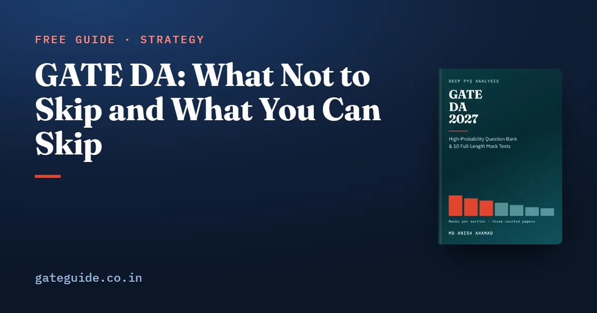

GATE DA: What Not to Skip and What You Can Skip

In GATE DA 2027 you can safely skip nothing the syllabus names, because the 2027 syllabus dropped nothing and no counted mark has ever fallen outside it. What you can do is decide how deep to go on each topic. This guide gives the book's four-line rule for that decision and turns it into two checklists you can tick off.
In this guide
Key takeaways
- The 2027 DA syllabus is word for word the 2026 one. There is no deleted material to skip.
- Skipping costs marks; over-reading costs only time. When in doubt, read briefly rather than skip.
- Never skip the topic groups examined in all three papers. Know them cold.
- Never skip the named topics no paper has set. Past papers will not prepare you for them.
- Topics examined once or twice: work them, at less depth.
- Only two counted questions sit at the syllabus edge, and both rest on named skills.
Two ways to be wrong
You can study something the syllabus does not contain. That costs time. Or you can skip something it does contain. That costs marks.
These two mistakes are not equal. An hour lost is recoverable on the next day. A question you cannot attempt is gone. So where a topic's status is unclear, the cheaper error is to read it.
Remember: "Skip" should mean "go shallower", never "never open".
The four-line decision rule
The GATE DA 2027 book reduces the whole question to four lines. Named means the 2027 syllabus lists it. Examined means a counted question from 2024, 2025 or 2026 was placed on it.
| If the topic is | Then |
|---|---|
| Named, examined in all three papers | Certain. Know it cold. |
| Named, examined in no paper | Read it, because past papers never will make you. |
| Named, examined in one or two papers | Work it. Three papers cannot tell rare from not yet drawn. |
| Not named | Recognise it in a past paper and move on. |
Worked example: applying the rule
Take four topics and run them through the table.
- SQL drew marks in 2024, 2025 and 2026. Line one: know it cold.
- LU decomposition drew no counted question. Line two: give it a careful reading, about ten minutes once you know Gaussian elimination.
- Decision trees drew one question, in 2024. Line three: work the entropy and information-gain calculation, at normal depth.
- Topological sorting is not named. The 2024 paper set one question on it (Q51), counted in Programming as a traversal application. Line four: recognise the idea and move on.
None of the four ends with "skip".
Checklist one: examined in every paper
Twenty-five topic groups drew marks in all three papers, including four General Aptitude areas. Tick these first.
- Probability: continuous random variables and the CDF; Poisson, normal, t and chi-squared; counting and the axioms; Bayes' theorem.
- Linear Algebra: projection, orthogonal and idempotent matrices; eigenvalues and determinants; vector spaces.
- Calculus: maxima and minima; limits.
- Programming: Python code traces; graph traversals and shortest paths; basic sorts; binary search.
- Database: relational algebra and tuple calculus; normal forms; SQL.
- Machine Learning: classification problems; neural networks; clustering.
- Section 7: propositional and predicate logic; uninformed, informed and adversarial search.
- General Aptitude: quantitative, spatial, analytical and verbal.
These 25 groups carry 195 of the 300 marks set so far. If your preparation is incomplete, it should be incomplete somewhere else.
Checklist two: named, never set
These have no past-paper history. That is exactly why they belong on a do-not-skip list.
Whole groups with no counted marks:
- Confidence interval, z-test, t-test, chi-squared test
- LU decomposition
- Linked lists
Named items not yet set as a question in their own right:
- Partition matrix
- Linear search; mergesort
- File organisation; data types; discretisation, sampling and compression; categorisation of measures
- Multiple linear regression; k-fold cross-validation; top-down clustering and multiple-linkage
Most of these take an hour or less each. A question on a neighbouring item may have touched one in passing, so treat the second list as "not yet set on its own", not as proven zeros.
Trap: A ranked priority list built from past papers pushes these topics to the bottom, because they have no history. That ranking says nothing about their importance on the day.
The caution about everything in between
A topic that appeared in one or two papers is the hardest to judge. The book draws no skip conclusion from a low count, for two reasons.
First, the record is small. With three papers, "set once" fits "rare" and "not yet drawn" equally well.
Second, the counting can hide a skill. In 2026, Calculus was counted at 2 marks. But three more questions in the same paper, worth 5 marks, used calculus as the working tool and were counted in the section their subject sat in. The paper asked for marks of calculus work, not 2.
What can actually be skipped
Only material the syllabus does not name, and there is almost none of it in the record. Two counted questions sit at the edge:
| Question | Marks | What it asks | Rests on |
|---|---|---|---|
| 2024 (Q51) | 2 | Valid topological orderings of a directed acyclic graph | Graph traversal |
| 2026 (Q35) | 1 | Value of a double infinite geometric series | Limits |
Neither deserves a study block, and neither is worth skipping either. Meeting one in a past paper costs a few minutes.
In one line: Ration time by weight and recurrence; never ration it by crossing named topics off.
If time is short
- Finish checklist one first, heaviest groups first. General Aptitude belongs here; the General Aptitude guide covers it.
- Then give checklist two one quick pass, a formula or a procedure each.
- Then work the once-or-twice topics at normal depth, heaviest section first.
- Practise multiple-select questions throughout; the marking scheme guide, common to every GATE paper, explains the no-partial-credit rule.
Remember that 2027 is set by IIT Madras, which has never set a DA paper, as the organising institute guide explains. Check the exam dates to plan the weeks you have.
This guide gives the rule and the checklists. The GATE DA 2027 book gives every section's counted topic table and writes practice questions on every checklist item, including the never-set ones.
Quick revision
- Nothing the syllabus names is skippable; nothing was dropped for 2027.
- All three papers: know it cold.
- No paper: read it, because past papers cannot cover it.
- One or two papers: work it at normal depth.
- Not named: recognise and move on; only two such edge questions exist.
- Low counts can hide a skill: 2026 calculus was 2 marks counted, 7 marks used.
- Ration by depth, never by deletion.
Frequently asked questions
Which topics can I skip in GATE DA 2027?
Nothing the syllabus names. The 2027 DA syllabus dropped nothing from 2026, and no counted mark in the three papers fell outside it. If time is short, ration depth by weight and recurrence instead of striking topics off, and give the short never-asked topics at least one careful reading.
What should I never skip in GATE DA?
Two groups. First, the topic groups examined in all three papers, such as Python code traces, continuous random variables, logic, search, relational algebra and SQL. Second, the named topics no paper has set, such as confidence intervals, LU decomposition and linked lists, because past-paper practice will never cover them.
Is it safe to skip GATE DA topics asked only once?
No. With three papers, a topic set once is as consistent with rare as with not drawn yet. The book's rule is to work such topics, at less depth than the always-asked ones. Several Machine Learning methods, like k-nearest neighbour and decision trees, fall in this group.
What is the GATE DA four-line decision rule?
If the syllabus names a topic and all three papers examined it, know it cold. If it is named and never examined, read it, because nothing else will make you. If it is named and examined once or twice, work it. If it is not named, recognise it in a past paper and move on.
Sources
- GATE 2027 official website (IIT Madras)
- GATE 2027 DA syllabus PDF (IIT Madras)
- GATE 2026 DA question paper (IIT Guwahati)
Dates, fees and the syllabus are set by the GATE 2027 organising institute and can change. Always confirm at gate2027.iitm.ac.in.